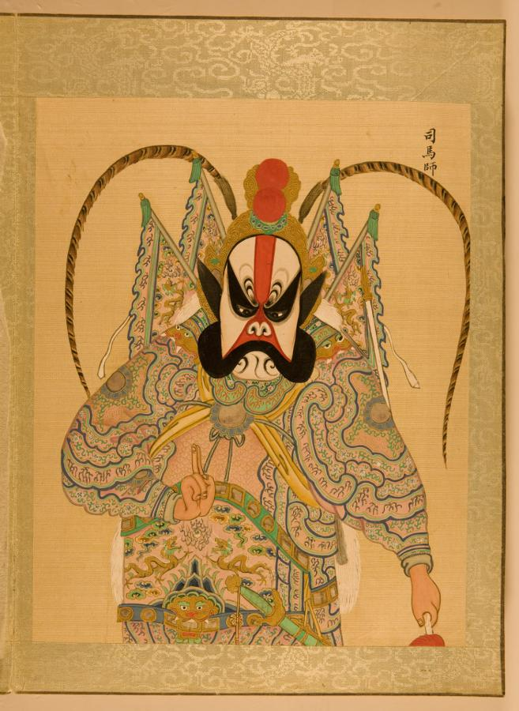
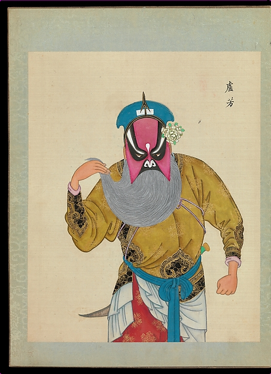
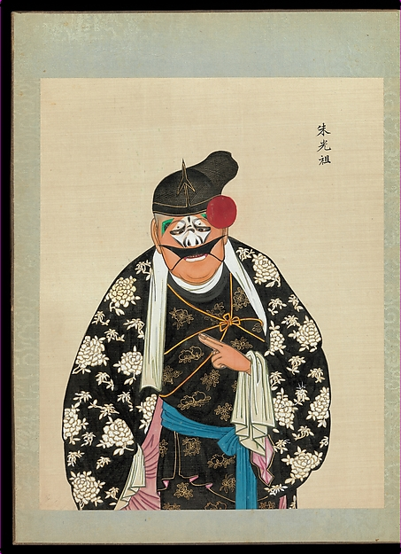

屠岸贾
净（花脸）· 晋国权臣，本剧反派
花十字脸，脑门红色立柱纹，眉眼造型显出阴险凶狠。
谱式据何永泉《京剧脸谱选绘》：花十字脸，谱式依据演员张洪祥的舞台设计整理。

图上原题：「司馬師」（第 24 幅）
同为白色十字门、红立柱，谱式最接近；非本剧人物。
美国国会图书馆《昇平署臉譜》，原件藏中国国家图书馆
魏绛
净（花脸）· 晋国大将，助孤儿报仇
粉色三块瓦脸：刀眉、老眼窝，显得严毅方正；后几场戴白满（白胡子）。

图上原题：「盧方」（DP280100）
同类参照，非本剧人物。粉色三块瓦：脑门、左右两颊三块粉色，被黑眉、黑眼窝隔开；眉形不完全是刀眉。
大都会艺术博物馆《京劇一百人物像》，CC0
晋灵公
丑 · 荒淫的国君
丑角扮，鼻梁眼间勾白（具体谱样待核）。

图上原题：「朱光祖」（DP280157）
同类参照，非本剧人物。丑角小花脸：鼻梁眼间一块白粉。
大都会艺术博物馆《京劇一百人物像》，CC0